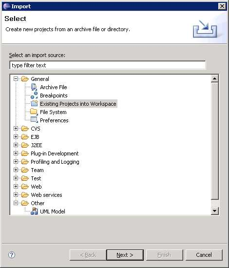

LexBIG Data QA System - Development
Documentation
relating to software development and systems dependencies of the LexBIG
Data
QA System.
[ overview | details |
references ]
Overview
The LexBIG Data QA System is a collection of Perl scripts and Java
programs developed and tested in a Linux environment. This
document the various system and third-party library dependencies as
well as the structure and location of the repository, and the details
of the development environment.
Details
Three key topics are covered here:
System
Dependencies
These OS and tool versions were used for development and testing are
recommended for general use. However, we do expect the system to
run in any UNIX-like environment (including Cygwin) with the
proper Perl, Java, and MySQL versions installed.
- Operating System:
GNU/Linux, kernel 2.6.9-55.0.9
- Java: JDK1.6.0_01-b06
- Perl: 5.8.5
- MySQL: 5.0.51a-community
- LexBIG: 2.2.0 (03/05/2008)
- Apache Ant: 1.7.0
Repository
The source files for the LexBIG Data QA System are maintained in a CVS
repository running from the LexBIG GForge site. The location to
use is:
:ext:developername@cbiocvs2.nci.nih.gov:/share/content/gforge/lexbigqa
The repository structure looks like this:
TODO: Make sure this correctly reflects the repos:
data/
etc/
db.props_orig
lib/
src/
java/
gov/
nih/
nci/
lexbig/
qa/
common/
diffReport.pl
countDb.pl
countApi.pl # wrapper script around java
go/
countGo.pl
build.xml
INSTALL.txt
README.txt
.classpath
.project
The ant build script contains a "make_zip" target that creates a lexbigQa.zip file that can be
installed into a predeterimined $QA_HOME on any system meeting the requirements.
Development
Environment
Development was performed using the Eclipse 3.4 (Ganymede) IDE on
Windows using the Java version described above. To browse the
source code in Eclipse, obtain a copy from the CVS repository
described above. Then use the File->Import feature of
Eclipse. Open the item labeled "General" and choose "Project from
existing workspace".

Enter the top level directory exported from CVS as your "root
directory" and click "Finish".
References
[ overview | details |
references ]